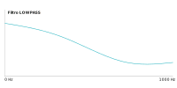

Bem-vindo ao Sistema de Áudio Digital
Aprenda sobre processamento e formatos de áudio em sistemas multimídia
Conceitos Fundamentais
Entenda os princípios básicos do áudio digital
Formatos de Áudio
Conheça os principais formatos e codecs
Processamento de Áudio
Explore filtros, efeitos e análise
Conceitos Fundamentais de Áudio Digital
O que é Áudio Digital?
Áudio digital é a representação do som em formato de código binário, ou seja, uma sequência de números (bits) que pode ser processada, armazenada e transmitida por meios digitais.
Ondas Sonoras

O que são: Vibrações que se propagam pelo ar (ou por outros materiais).
- Essas ondas são geradas por fontes sonoras, como instrumentos musicais, vozes humanas ou qualquer objeto que produza som.
Como funcionam: Um objeto vibra → faz o ar vibrar → essas vibrações se espalham → chegam ao seu ouvido → você ouve o som.
Exemplo de Áudio Digitalizado
Exemplos de áudios digitalizados gerados pelo Audacity.
Formatos e Codecs de Áudio

Formato MIDI (Musical Instrument Digital Interface)
MIDI não é um formato de áudio como WAV ou MP3. Em vez disso, é um protocolo de controle que armazena instruções musicais como notas, velocidade e duração. É ideal para música sintetizada.
Demonstração MIDI Interativa:
Clique e segure nas teclas para ouvir as notas
Processamento de Áudio Digital
O Processamento de Áudio é o conjunto de técnicas e algoritmos aplicados a sinais de áudio (geralmente digitais) para manipular características como volume, frequência, dinâmica e timbre, a fim de melhorar a qualidade, criar efeitos ou atingir um resultado artístico específico.
Tipos de Filtros de Áudio
Filtros são usados para processar sinais de áudio. Veja a resposta em frequência:

Permite a passagem de uma faixa estreita de frequências e bloqueia (atenua) todas as frequências baixas e todas as frequências altas.
Permite a passagem das frequências baixas e bloqueia ou atenua as frequências altas.
Permite a passagem das frequências altas e bloqueia ou atenua as frequências baixas.
Representação visual de um equalizador com bandas de frequência.
O Equalizador é uma das ferramentas mais fundamentais no
processamento de áudio. Ele permite ajustar o balanço de frequência
de um sinal, aumentando ou diminuindo o volume em
faixas de frequência específicas.
Compressão dinâmica de áudio
Tutorial sobre compressão de áudio digital.
- A compressão dinâmica é um processo de processamento de áudio que reduz a diferença entre as partes mais altas e mais baixas de um som.Ela diminui automaticamente os picos muito fortes e aumenta os trechos mais fracos, deixando o áudio mais uniforme e equilibrado.
Quiz Interativo - Teste seus Conhecimentos
Este quiz contém 5 perguntas aleatórias de uma base de 15+ questões sobre áudio digital.
Clique em começar para iniciar.